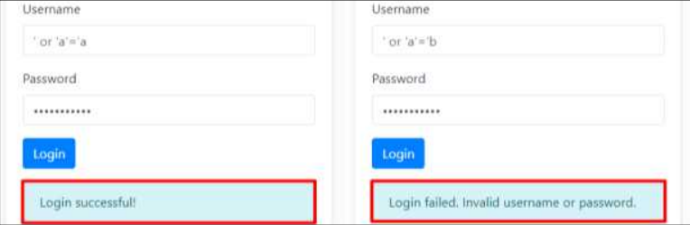
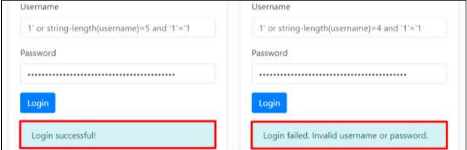

XPath injection 이란?
- 공격자가 웹 애플리케이션의 입력창에 악의적인 XPath 쿼리를 주입하여, 백엔드의 XML 데이터베이스나 구조화된 데이터를 비정상적으로 조회하거나 조작하는 공격 기법입니다.
SQL vs Xpath 차이
- SQL 인젝션이 관계형 데이터베이스(RDB)를 겨냥한다면, XPath 인젝션은 XML 문서를 데이터를 조회하는 경로 언어인 XPath를 타깃으로 합니다.
점검 방법
Step 1) 취약점 존재 유무 판단을 위한 Xpath 쿼리(' or '1'='1, ' and 'a' = 'b 등) 삽입

Step 2) 추가적인 쿼리 질의를 통하여 데이터 추출 등의 타당성 검토
' or count(parent::*[position()=1])=0 or 'a'='b 1' or string-length(username)=[COUNT] and '1'='1... 등

조치 방법
1. XPath 쿼리에 사용자가 값을 입력할 수 있는 경우, 입력값 검증을 통해 필요 문자만을 받아들이게 함. ( ) = ' [ ] : , * / 등의 오동작를 유발하는 특수문자는 제한하며, 특정 특수문자만을 필터링하는 것이 아닌 허용된 문자 이외의 모든 입력을 화이트리스트 방식으로 필터링 처리
2. Xpath 및 XQuery의 쿼리 삽입 시 사용되는 특수문자를 필터링하도록 웹 방화벽 룰셋 적용